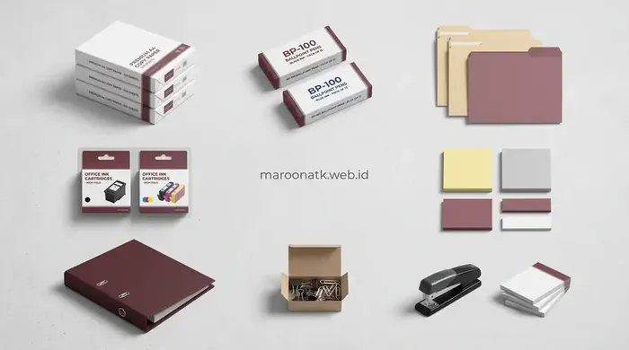
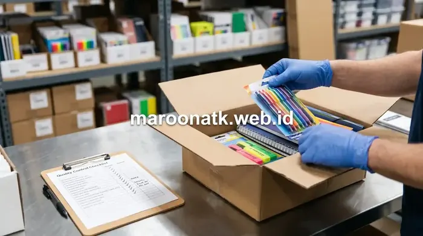

Pentingnya Paket Pengadaan Alat Tulis Kantor Bulanan untuk Efisiensi Operasional B2B
Paket pengadaan alat tulis kantor bulanan B2B adalah bundling terstruktur yang mencakup kertas HVS A4/F4 80gr, toner cartridge original, map/ordner arsip, pulpen, dan perlengkapan administrasi lainnya dalam satu kontrak pengiriman periodik. Sistem paket ini memungkinkan tim GA dan Purchasing untuk mengunci harga kontrak, mengurangi frekuensi PO individual, dan menjamin ketersediaan stok operasional tanpa gangguan—disertai kelengkapan e-Faktur PPN 11% yang sah untuk audit akuntansi perusahaan.
Banyak perusahaan dan instansi masih menjalankan pengadaan alat tulis kantor secara reaktif—membeli satu per satu saat stok habis. Pendekatan ini tidak hanya memboroskan waktu staf GA, tetapi juga menciptakan ketidakkonsistenan harga, kualitas produk yang tidak terstandarisasi, dan tumpukan dokumen PO yang menyulitkan proses audit akhir tahun.
Solusinya adalah beralih ke sistem paket pengadaan alat tulis kantor terstruktur yang dikelola oleh mitra supplier ATK terpercaya seperti Maroon ATK. Dengan model kontrak bulanan, seluruh kebutuhan operasional ATK kantor Anda dapat terpenuhi secara konsisten, tepat waktu, dan terdokumentasi secara administratif.

Panduan Memilih Supplier ATK Kantor Jakarta Terpercaya Berlegalitas
10 kriteria wajib dalam memilih supplier ATK kantor yang legal, transparan, dan dapat diandalkan untuk procurement jangka panjang.
Komponen Utama yang Wajib Ada dalam Paket ATK Bulanan Korporat
Sebelum memilih tingkatan paket, tim Purchasing perlu memahami komponen-komponen inti yang membentuk ekosistem ATK operasional sebuah kantor. Berikut adalah daftar komponen yang wajib masuk dalam spesifikasi TOR pengadaan ATK bulanan:
Kertas HVS: Tulang Punggung Operasional Administrasi
Kertas HVS A4 dan F4 dengan gramatur 75gr atau 80gr adalah komponen dengan konsumsi tertinggi. Untuk kantor dengan 50 karyawan aktif, estimasi konsumsi bulanan berkisar 10–20 rim kertas A4. Pastikan merek yang dipilih memenuhi standar ISO Brightness minimal 92% (seperti SiDU, PaperOne, atau Sinar Dunia) untuk kualitas cetak optimal pada printer laser maupun inkjet.
Toner Cartridge & Tinta Printer: Komponen Kritis Biaya Tinggi
Toner cartridge original multi-brand (HP, Canon, Epson, Brother) adalah komponen ATK dengan nilai moneter tertinggi dalam satu paket bulanan. Penggunaan toner compatible non-original berisiko merusak drum printer dan membatalkan garansi mesin. Maroon ATK hanya memasok toner cartridge original OEM yang disertai garansi keaslian produk.
Perlengkapan Arsip & Administrasi
Komponen ini mencakup ordner/binder A4 (tebal 5cm dan 7cm), map plastik transparan, hanging folder, amplop dinas coklat dan putih, kertas karbon, label sticker, serta perlengkapan binding. Standardisasi merek dan spesifikasi komponen arsip sangat penting untuk menjaga konsistensi sistem pengarsipan dokumen instansi jangka panjang.

Paket ATK bulanan Maroon ATK dikemas secara terstandar lengkap dengan daftar isi dan label identifikasi untuk memudahkan verifikasi penerimaan barang oleh tim GA.

SOP Pengadaan Furniture Kantor B2B: Panduan untuk Purchasing Team
Panduan alur kerja SOP pengadaan furniture kantor B2B untuk purchasing team korporat dan instansi.
Matriks Perbandingan Tiga Tingkatan Paket Pengadaan ATK Bulanan
Maroon ATK menyediakan tiga tingkatan katalog ATK Maroon ATK yang dapat disesuaikan dengan skala organisasi dan volume kebutuhan bulanan Anda:
| Tingkatan Paket | Isi Komponen Utama | Estimasi Kuota Pemakaian / Bulan | Kisaran Harga / Bulan |
|---|---|---|---|
| Starter ≤ 25 karyawan |
Kertas HVS A4 80gr, Pulpen ballpoint, Map plastik, Amplop dinas, Stapler & isi, Correction tape, Penggaris, Spidol whiteboard | 3–5 rim kertas, 2 lusin pulpen, 1–2 pak map, 1 set perlengkapan meja dasar | Rp 800.000 – Rp 2.000.000 |
| Business 25–100 karyawan |
Kertas HVS A4 & F4 75gr/80gr, Toner cartridge original (1–2 unit), Ordner/binder arsip, Pulpen & pensil, Amplop dinas, Hanging folder, Label sticker, Materai, Spidol & marker | 5–15 rim kertas, 1–2 unit toner, 5–10 ordner, 3–5 lusin pulpen, kelengkapan administrasi standar | Rp 2.500.000 – Rp 7.500.000 |
| Corporate > 100 karyawan / Instansi |
Kertas HVS A4 & F4 (multi-merek), Toner cartridge original (multi-printer), Ordner, Map, Amplop, Kertas karbon, Binding cover, Stempel, Tinta stempel, Perlengkapan rapat, dan item custom sesuai TOR | 15–50+ rim kertas, 3–10 unit toner, seluruh kelengkapan ATK operasional & rapat, sesuai negosiasi kontrak | Rp 8.000.000 – Rp 30.000.000+ |

Setiap paket ATK bulanan melewati proses quality control ketat di gudang Maroon ATK sebelum dikirimkan, memastikan kelengkapan dan kesesuaian item dengan SPH yang telah disepakati.

Mengenal Papan Tulis Digital Smart Board: Spesifikasi & Panduan Memilih
Panduan spesifikasi papan tulis digital interaktif 4K UHD dan fitur screen mirroring untuk ruang rapat modern.
Keunggulan Paket ATK Bulanan Maroon ATK vs Pembelian Ad-Hoc Konvensional
Memilih sistem paket ATK berlangganan bulanan dari Maroon ATK memberikan keuntungan strategis yang signifikan dibandingkan model pembelian satuan reaktif:
- Efisiensi Waktu Procurement: Satu PO bulanan menggantikan puluhan transaksi satuan, menghemat waktu kerja staf GA dan Purchasing secara signifikan.
- Harga Kontrak Terkunci: Harga item ATK dalam kontrak bulanan tidak terpengaruh fluktuasi harga pasar selama periode kontrak berlaku, memberikan kepastian perencanaan anggaran operasional.
- Kelengkapan Dokumen Pajak: Setiap pengiriman paket disertai e-Faktur PPN 11% yang valid, SPH resmi berkop perusahaan, dan BAST—memenuhi semua kebutuhan dokumentasi audit internal dan eksternal.
- Jaminan Kontinuitas Stok: Sistem reminder dan jadwal pengiriman terjadwal memastikan stok ATK tidak pernah kosong di saat kritis—menghilangkan risiko terhentinya operasional akibat kehabisan material.
- Kustomisasi Item: Paket dapat disesuaikan dengan kebutuhan spesifik instansi—termasuk merek kertas pilihan, tipe toner untuk model printer tertentu, dan item ATK khusus divisi.
Butuh Penawaran Paket ATK Bulanan untuk Perusahaan Anda?
Konsultasi kebutuhan & SPH gratis
Tim Maroon ATK siap membantu audit kebutuhan ATK bulanan dan menyusun penawaran harga terbaik yang sesuai anggaran operasional Anda.
Kesimpulan: Optimalkan Anggaran dengan Paket Pengadaan Alat Tulis Kantor Bulanan B2B
Poin Kunci Memilih Paket ATK Bulanan yang Tepat
Beralih ke sistem paket pengadaan alat tulis kantor bulanan adalah langkah strategis yang akan mengoptimalkan efisiensi operasional sekaligus memperkuat akuntabilitas keuangan perusahaan atau instansi Anda.
- Pilih Tingkatan Paket Sesuai Skala: Starter untuk ≤25 karyawan, Business untuk 25–100 karyawan, Corporate untuk instansi besar dengan kebutuhan custom.
- Pastikan Kelengkapan Dokumen: Wajib meminta e-Faktur PPN 11%, SPH resmi berkop perusahaan, dan BAST dari setiap supplier untuk keamanan audit.
- Mitra Terpercaya Maroon ATK: Berbadan hukum PT resmi, pengiriman terjadwal, dan layanan konsultasi kebutuhan ATK gratis tanpa syarat.
Pertanyaan Umum (FAQ) Paket Pengadaan ATK Bulanan
Komponen utama paket pengadaan ATK bulanan B2B mencakup: kertas HVS A4/F4 (75gr/80gr), pulpen/ballpoint, map/ordner arsip, tinta printer/toner cartridge original, amplop dinas, stapler beserta isi, correction tape, dan perlengkapan administrasi lainnya. Komposisi komponen disesuaikan berdasarkan tingkatan paket: Starter, Business, atau Corporate.
Untuk perusahaan skala menengah (50–100 karyawan), paket ATK bulanan Business dari Maroon ATK berkisar antara Rp 2.500.000–Rp 7.500.000 per bulan, mencakup kertas HVS 5–15 rim, toner cartridge 1–2 unit, dan kelengkapan administrasi standar kantor. Harga final ditetapkan melalui Surat Penawaran Harga (SPH) resmi setelah audit kebutuhan.
Ya, sebagai badan usaha berbentuk PT yang terdaftar sebagai Pengusaha Kena Pajak (PKP), Maroon ATK (maroonatk.web.id) menerbitkan e-Faktur PPN 11% yang valid untuk setiap transaksi pengadaan ATK bulanan, disertai SPH resmi berkop perusahaan dan Berita Acara Serah Terima (BAST) untuk kebutuhan audit akuntansi internal.

Arby Ardiansyah
Praktisi pengadaan B2B berpengalaman lebih dari 5 tahun dalam manajemen rantai pasok sarana kantor, optimasi biaya ATK korporat, dan e-procurement instansi pemerintah dan swasta di Indonesia.